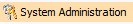
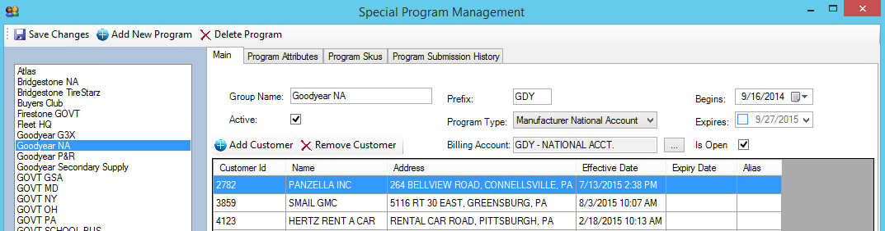
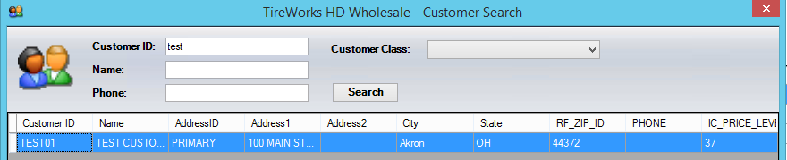
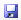
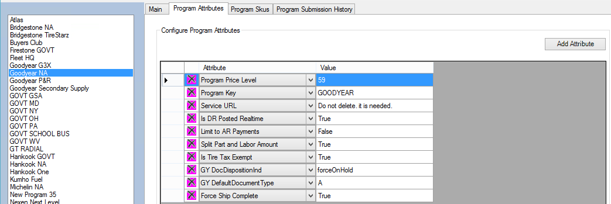
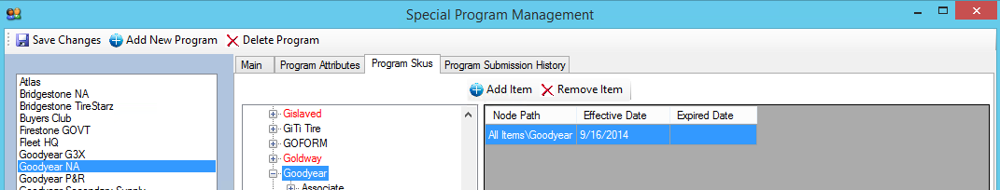
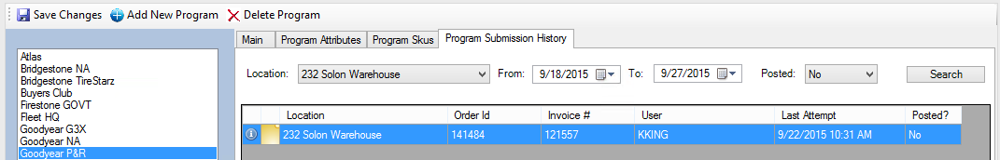
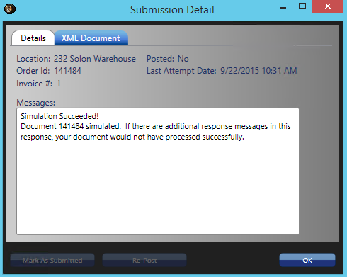

Special Programs
Gives the ability to assign an order and/or customer to a special program. Special programs can be created for National accounts, manufacturer volume bonus programs or internal volume bonus incentives. This functionality gives flexibility to assign a billing account (in-house AR account), set tax exemptions, and potentially send directly to manufacturer at invoice.
Home Screen: Select

then select “Special Programs” from start a taskMain Tab

- Select Add New Program
- Enter desired Group Name and prefix
- Verify active status (by default active checkbox will be checked)
- Selecte Program Type
- Manufacturer National Account - National Accounts, Secondary Supply, Car Dealers, and Government programs
- Manufactuer Volume Bonus - Bonus programs funded by the manufactuer (i.e. Yokohama Advantage, Kumho Fuel, etc….). This could also be used for In-House funded volume bonus programs as well such as customer specific volume bonus programs
- Assign Begins date if needed
- Assign Expires date if needed
- Assign Billing Account Number with elipsis – Used for National accounts when billing to a intercompany AR account
- Select appropriate is open status
- Select desired “Is Open” status
- Unchecked – Limits on those customers defined in program to be selected
- Checked – allows any customer to be added through sales order
- If checked, Select Add Customer

-
-
- Search for desired customer via customer ID, Customer Name or Customer Phone
- Highlight desired customer and select OK or double click customer
-
 Note*:* If customer has multiple ship-to’s and you want to include make sure you select all.
Note*:* If customer has multiple ship-to’s and you want to include make sure you select all.
- Select

Save Changes
Program Attributes Tab
Allows attributes to get set by program.

- Select Add Attribute
- Will automatically bring the next attribute to bottom of list
- Can use Dropdown to select desired attribute
- Program Price Level – Allows price level to be assigned to Special Program so each time the program is selected, the price level with automatically change
- Tire Tax Exempt – Allows tire tax exempt status to be be set regardless of customer setting
- FET Exempt - Allows FET exempt status to be be set regardless of customer setting
Program Skus Tab
Ability to set desired branches or individual Skus for program.

- Select (Highlight) desired branch of the inventory tree
- Select Add Item
- Select Expired date if required
Note*:* This can be done at any branch or single Sku of the tree (i.e. Manufacturer, Sub Mfg., Class, SubClass, Category, or individual Sku).
Program Submission History Tab
Displays all submissions based on criteria selected and the ability to see validation window and the opportunity to resubmit if unposted if manufacturer integration is available and being utilized.

- Select location from dropdown
- Select From and To dates
- Select desired posted status
- Yes, are those that have been transmitted to mfg.
- No, are those that have not been transmitted
- Select Search
- Displays results based on selections
- Select to see validation information
- Use when posted status is No

- Select Repost if needed
Note: If using retail application, Special Programs setup in wholesale can be copied to retail application.